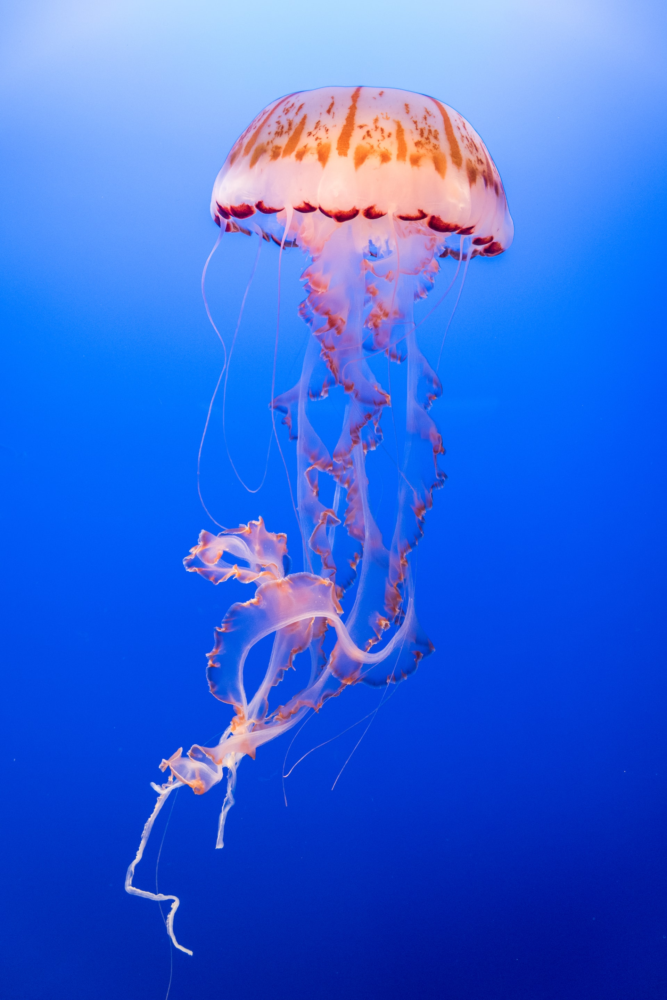

A JELLY-FISH
By Marianne Moore
Visible, invisible,
A fluctuating charm,
An amber-colored amethyst
Inhabits it; your arm
Approaches, and
It opens and
It closes;
You have meant
To catch it,
And it shrivels;
You abandon
Your intent—
It opens, and it
Closes and you
Reach for it—
The blue
Surrounding it
Grows cloudy, and
It floats away
From you.